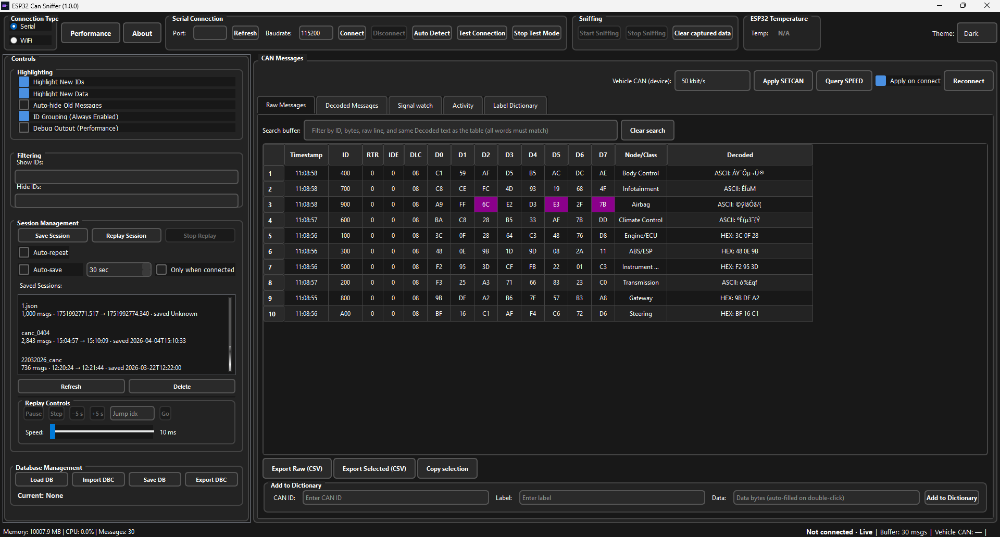
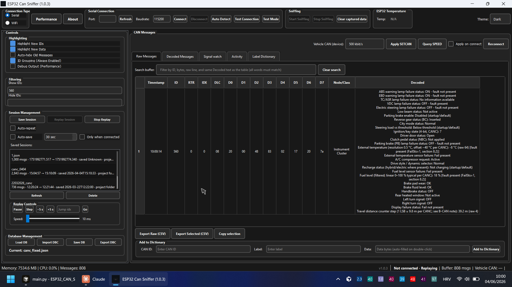
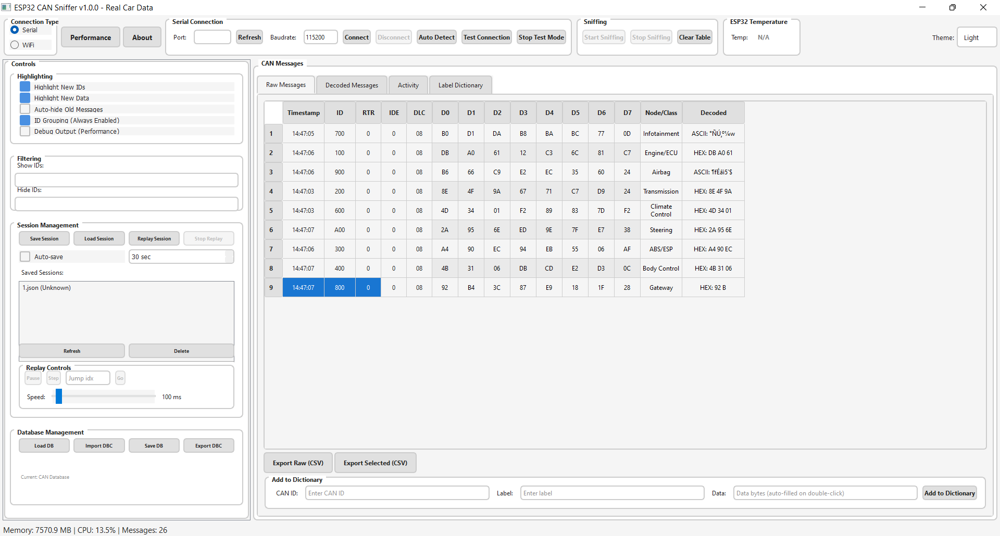

Live Monitoring
High-performance capture with real-time filtering and stream stats.
Professional CAN Toolkit
Monitor and decode vehicle CAN traffic in real time with a Windows desktop suite built for ESP32 and MCP2515. DBC import/export, save/replay, and optional FIAT Stilo add-on (Stilo-tested dictionary data)—built for workshop technicians and developers worldwide.
✔ Real-time CAN decoding
✔ Signal-level analysis (not just raw data)
✔ Works with ESP32 + MCP2515 (no custom hardware)
🔧 FIAT Stilo add-on (tested) – €30 one-time
v1.0.1
PRO package unlocks Wi-Fi, advanced databases, and automation tools. Free demo: use Download Demo on the left.
Value
Professional CAN tools cost thousands. We built the same core workflow for about €140/year — tested on a real Fiat Stilo, not just a spec sheet.
| Feature | ESP32 CAN Sniffer | SavvyCAN | Vector CANalyzer | PCAN-View |
|---|---|---|---|---|
| Price | €140/year (annual PRO) | Free | €2,000–5,000+ | Free* |
| Hardware cost | ~€5 ESP32 + MCP2515 | Any interface | €500–2,000+ proprietary | €100+ PEAK only |
| Windows GUI | Yes | Yes | Yes | Yes |
| Vehicle dictionaries | Yes (Fiat tested) | No | Extra cost | No |
| DBC support | Yes | Yes | Yes | Yes |
| Session replay | Yes | Yes | Yes | No |
| Wi‑Fi capture | Yes | No | No | No |
| Signal watch | Yes | Yes | Yes | No |
| Ready out of the box | Yes | DIY setup | Yes | Yes |
| Support | Direct | Community | Corporate | Community |
| Works on cheap hardware | Yes | Yes | No | No |
* PCAN-View is free for basic viewing; full professional workflows often need paid PEAK hardware and tools.
| Hardware | Typical cost | Works with ESP32 CAN Sniffer |
|---|---|---|
| ESP32 + MCP2515 | ~€5–10 | Designed for this |
| Vector VN1610 | €800+ | No |
| PEAK PCAN-USB | €100+ | No |
| Kvaser Leaf | €200+ | No |
| ELM327 | ~€10 | Different protocol |
Product Tour
Watch a quick demo of the GUI in action, then explore the screenshots below.



High-performance capture with real-time filtering and stream stats.
Works with ESP32 + MCP2515. No custom PCB required.
DBC support, custom decoding and structured CAN analysis workflows.
Batch session save/load, automated health reports, and CAN activity analytics to accelerate diagnostics.
Track and monitor individual decoded signals inside CAN messages. Focus on meaningful states and values (enums, units, scaling) instead of raw hex bytes.
DEMO
€0
Use Download Demo at the top of the page.
PRO
€15 / month
ESP32 CAN Sniffer is a proprietary automotive diagnostic software platform developed by IFIX ELEKTRONIKA for professional CAN analysis, reverse engineering, and workshop deployment.
The software works with ESP32-based CAN sniffers using the MCP2515 controller. This widely available and affordable hardware setup delivers reliable, real-time CAN monitoring without the need for custom PCB design.
flash.bat + 8 MHz / 16 MHz builds; no Arduino IDE)Why upgrade?
Email esp32contact@gmail.com for licensing, software support, or deployment inquiries.